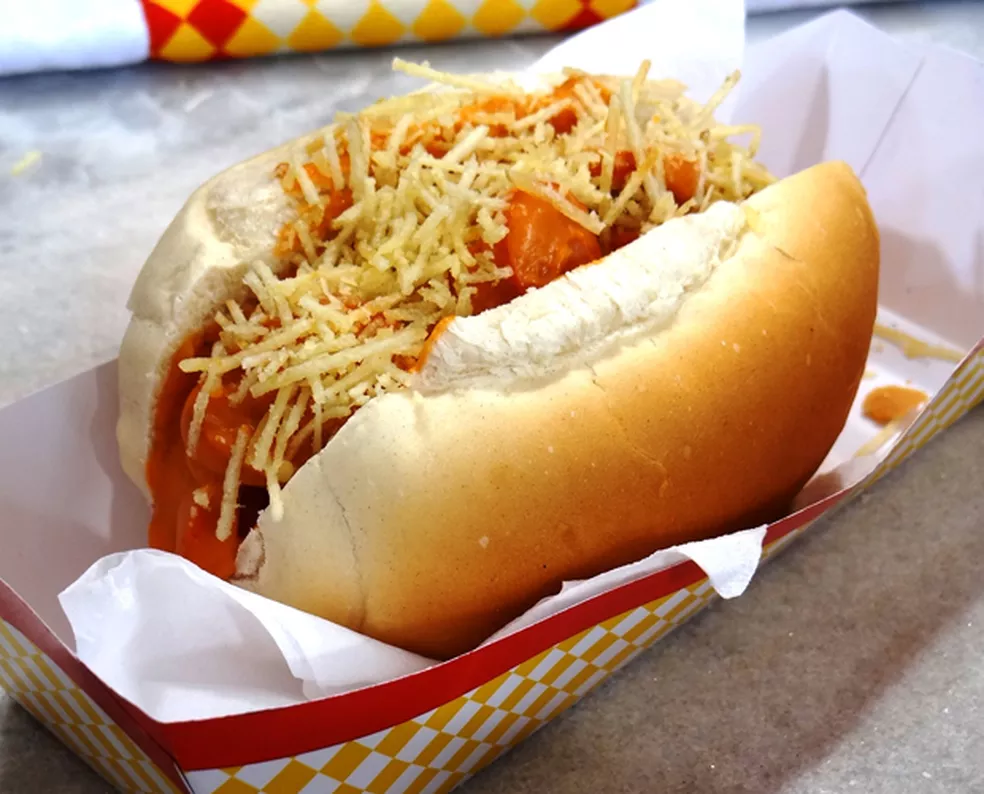

Cachorro-quente

Esse cachorro quente é baseado na receita do canal da
vó lurdes.
Delicioso e bem fácil de ser feito.
Ingredientes:
- 1 pacote de pão de cachorro-quente(óbvio)
- Batata palha
- Milho e ervilha
- Queijo ralado
- Ketchup e maionese
- 8 salsichas
- 3 colheres de óleo
- 1 tomate cortado
- 1 cebola grande picada
- cebolinha e salsa
- Pimentão
- Extrato de tomate
- Pimenta do reino
- 1 copo com água